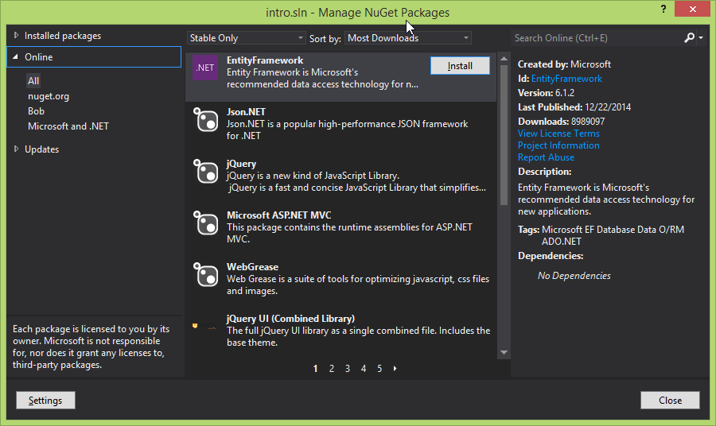

VS 2012 Cheat Sheet Of Ultimate Destiny By Ryan Kotzen
This is not a comprehensive overview for visual studio, more of a cheat sheet that people can use as a reference for some of the most common and important operations- (that I use or which I feel would be useful to new developers). I did a clean install of VS2012 and proceeded to setup a basic environment since I am about to train people using this IDE. Due to licensing reasons, vs2013 won't be used, and 2015 is still in preview
I am by no means a front end developer but due to masochistic tenancies, this cheat sheet has been built using HTML, CSS & JavaScript instead of MS Word. Feel free to contribute at GitHub
Start Page
This will pop up every time you open visual studio instead of a project, solution, or other file directly, feel free to turn it off using the buttons in the bottom right.
It will display your most recent solution files that you opened, and allow you to pin them there so they are always available. You can also create new projects from here, but this is easily accessible from the "file" menu or by right clicking on your solution file.
Creating a new project
This is useful when you want to ... you know ... create a new project. If you hit this without a solution open it will go ahead and create that for you as well.

From here you can select the type of project you are going to create, this is based on the various libraries, updates and templates you have installed. You can also search online for the latest template types and eventually create your own

Solution explorer
This is an overview of your project, a mini-map if you will. Represented as a tree view, it is important to note that this does not necessarily represent the underlying file structure. The structure is instead dictated by the solution and project's XML.
The tree structure itself is searchable and if "show all files" is enabled these will be searched as well.
If you are writing a web project, you can specify which page (.html, .cshtml, .aspx) that will be displayed first when debugging the web application. Please note that if you are using MVC the router can override this, also if you happen to have a view open when you click the debug button, this can sometimes open instead
keyboardShortcuts
Do yourself a favour, get ReSharper, it will make your life better in almost every way, here is a handy dandy .pdf with some common commands
ReSharper keyboard shortcutsHere are the ones for stock:
VS2012 Keyboard ShortcutsIt may be tempting (and it is definitely possible) to change them to suit your needs, but when you are working at someone else's PC, that isn't going to work. I recommend you just get used to them as is.
Turning off the preview "feature"
This initially seems like such a useful feature, but in practice tends to get in the way more than it helps. When you are ready to turn it off, the steps are here:
Edit Project XML
If you are feeling brave or are a Java dev at heart, you can delve into the XML config files for the project (and also for the solution itself). Generally not needed but can help fix a few rare issues

Change Theme
Personally I found that the light theme caused me more headaches and eye strain over prolonged periods. Your mileage may vary,
Show (hidden) Files In Folder
Sometimes it is useful to include and exclude files from the project (XML) but still have them in the files system. For example the bin and obj folders are created as part of the build process but are rarely needed when using the project itself.
File Properties
Sometimes you need to ensure that a file (such as a custom config file) gets copied to the output directory (bin\debug) so that it is accessible by your application. This window allows you to configure this, amongst other things

gitExtensionsBar
This is the simplest way to manage your projects git version control needs. If it doesn't show up, try reinstalling Git Extensions
toolbox
If you are doing a windows forms application then this can be very useful, it is also fairly useful if you are just starting out and can't remember all the available controls but you should become familiar with them sooner rather than later
textEditor
This is where the vast majority of your work will be done, get familiar with it and how to get the best out of it. *hint*, get ReSharper. IntelliSense (auto complete) can be accessed by hitting ctrl+space while typing and is one of the most useful features of the IDE
Note that you can actually view and edit two parts of the same file within one editor window
Don't use this for web applications, just don't. If you work in the web industry, you need to know and understand HTML and the properties available to you. Useful for XAML/Win Forms applications
Toolbars
These contain all sorts of useful features and can be heavily customised, basically most of features from the menus can be added as quick actions on the toolbars. By default it is primarily used to start debugging and changing the environment between release and debug (as well as any others you may have set up).
batchBuild
This can be very useful if you have #if DEBUG code and you would like to ensure that all program flows are checked in both release and debug modes

NuGet
This is the way that external libraries can easily be managed withing a .Net solution. It is equivalent to NPM, Bower or Maven in other languages
AddingReferences


{kind=link}
{kind=link}
{kind=link}
{kind=link}
{kind=link}
{kind=link}
{kind=link}
{kind=link}
{kind=link}
{kind=link}
{kind=link}
{kind=link}
{kind=link}
{kind=link}
{kind=link}
{kind=link}
{kind=link}
{kind=link}
{kind=link}
{kind=link}
{kind=link}
{kind=link}
{kind=link}
{kind=link}
{kind=link}
{kind=link}
Code Analysis


{kind=link}
{kind=link}
{kind=link}
{kind=link}
{kind=link}
{kind=link}
{kind=link}
usefulExtensions
- Ghost Doc
- Node tools for visual studio
- Visual Studio Spell Checker
- ReSharper
- Web Essentials
- Sandcastle Help File Builder